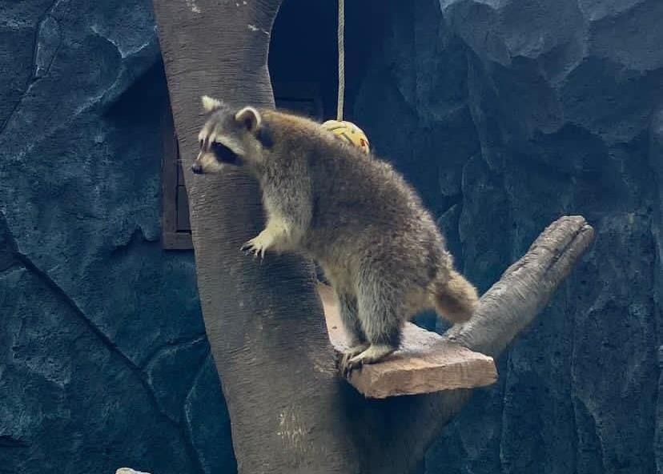

Rakun adalah mamalia yang berasal dari Amerika Utara dan dikenal dengan ciri khas wajahnya yang memiliki "masker" hitam di sekitar mata. Rakun memiliki tubuh dan mereka dikenal sebagai hewan yang cerdas dan sering kali mencari makan di tempat-tempat yang mudah dijangkau manusia, seperti tempat sampah atau pekarangan.
